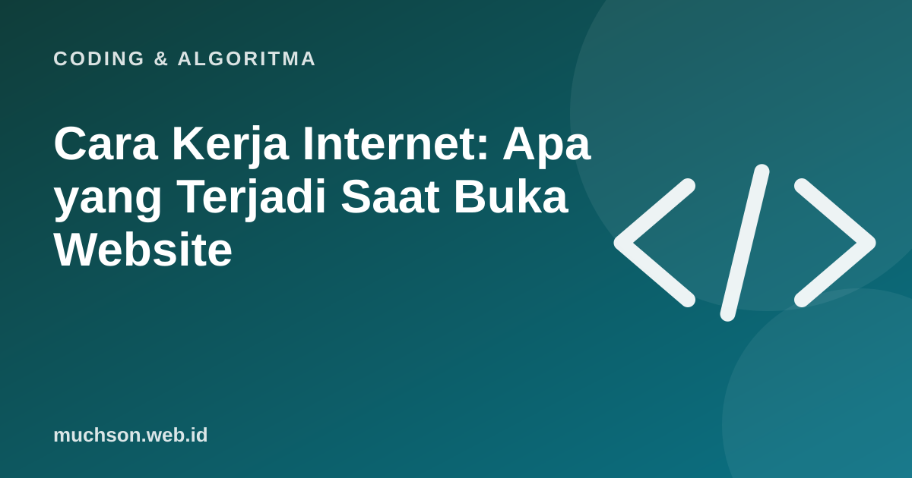

Beranda › Artikel › Coding & Algoritma
Coding & AlgoritmaCara Kerja Internet: Apa yang Terjadi Saat Buka Website
Anda mengetik alamat, menekan Enter, dan halaman muncul dalam sekejap. Di balik itu ada rangkaian langkah yang melibatkan beberapa sistem di berbagai tempat di dunia. Memahaminya membantu Anda mengerti banyak hal, dari situs lambat sampai error 404.

Perjalanan satu permintaan
Tiap tahap sederhananya
Kode status HTTP yang perlu dikenal
| Kode | Arti | Contoh penyebab |
|---|---|---|
| 200 | Berhasil | Halaman ditemukan dan dikirim |
| 301 / 302 | Dialihkan | Alamat lama menuju alamat baru |
| 403 | Dilarang | Tidak punya izin mengakses |
| 404 | Tidak ditemukan | Alamat salah atau halaman dihapus |
| 500 | Kesalahan server | Program di server bermasalah |
| 503 | Layanan tidak tersedia | Server sibuk atau sedang perawatan |
Mengapa sebuah situs terasa lambat?
Coba sendiri
Alat pengembang di browser (tekan F12, tab Network) menunjukkan setiap permintaan yang terjadi saat halaman dibuka, lengkap dengan ukuran dan waktunya. Itu cara terbaik untuk melihat sendiri semua langkah di atas.
Tanya jawab
Apa bedanya HTTP dan HTTPS?
HTTPS adalah HTTP dengan enkripsi (TLS) sehingga data tidak mudah disadap di perjalanan. Hampir semua situs kini memakainya.
Apa itu CDN?
Jaringan server di banyak lokasi yang menyimpan salinan konten agar dikirim dari titik terdekat pengunjung.
Mengapa kadang situs bisa dibuka di satu jaringan tetapi tidak di jaringan lain?
Bisa karena masalah DNS, pemblokiran, atau rute jaringan penyedia layanan internet.